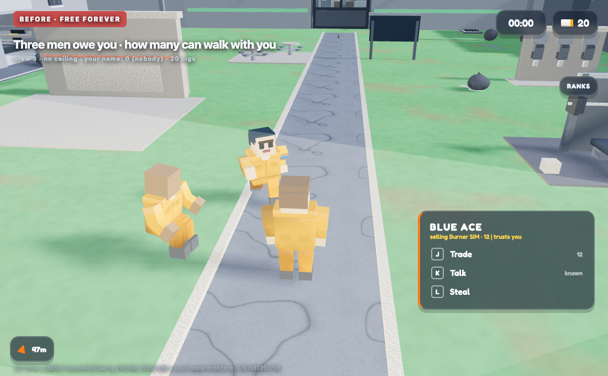
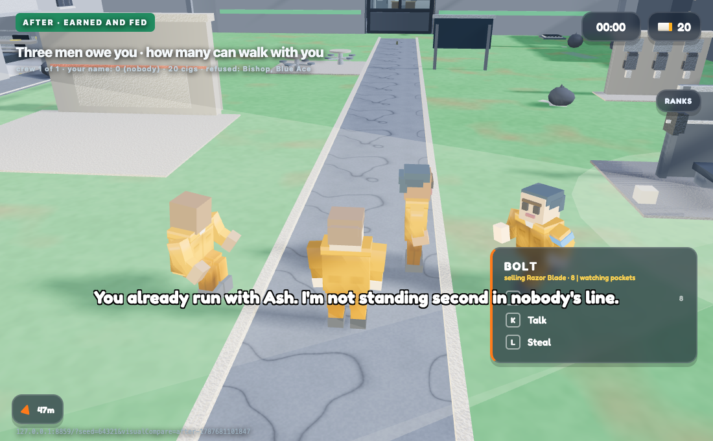
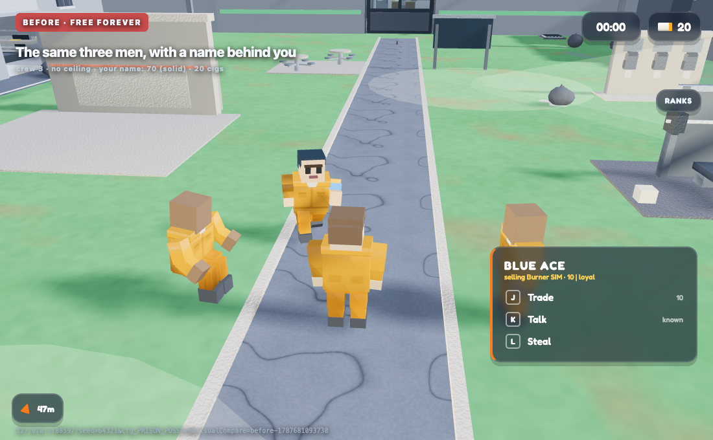
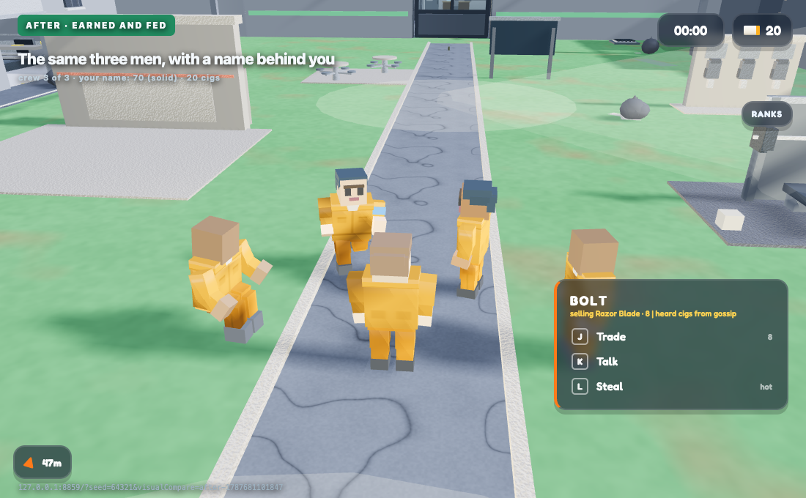
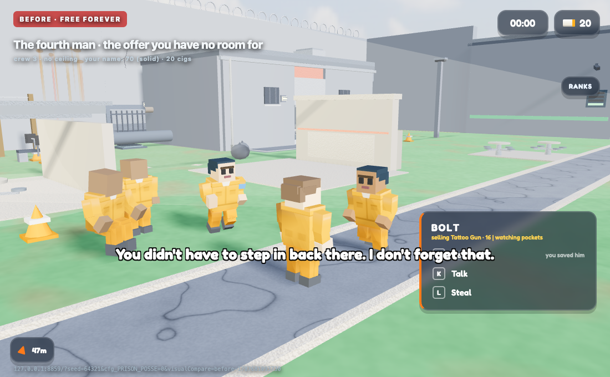
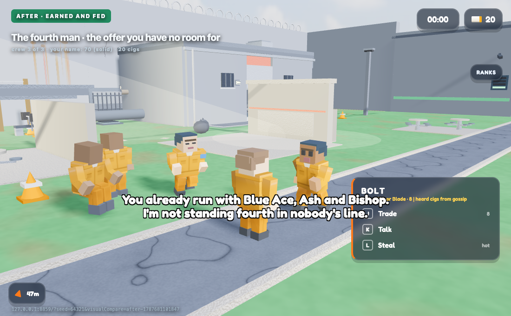
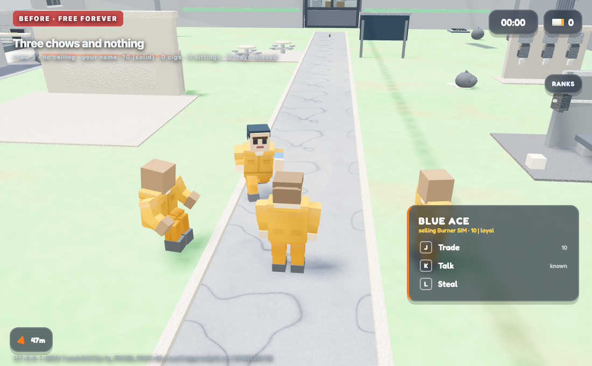
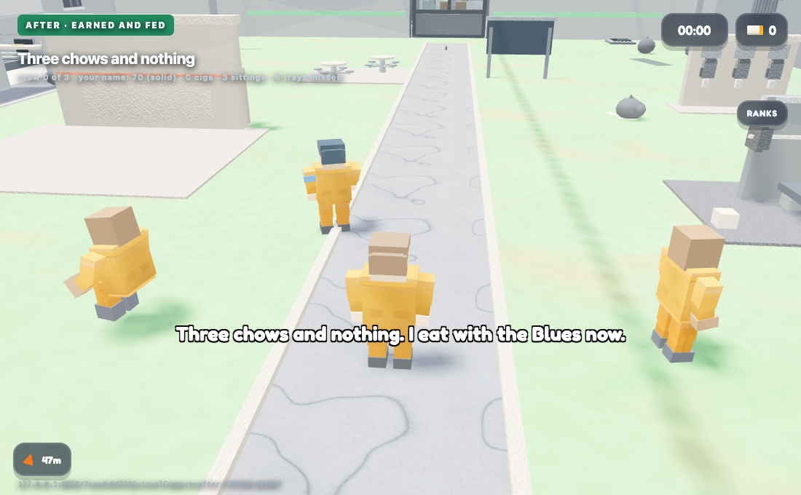

The NPC army had no ceiling and no bills. Four marks in one yard ask what your name is worth in men, what a man does when your line is full, and what three missed trays cost you.
Frames: 1100x680
http://127.0.0.1:8859/?seed=64321&cfg_PRISON_POSSE=0&visualCompare=before-1787681093730http://127.0.0.1:8859/?seed=64321&visualCompare=after-1787681101847Generated August 25, 2026 at 2:05 PM. Escape mode boots on both sides, rAF freezes, Math.random is replaced with one seeded stream, and the four alphabetically-first live inmates are staged on fixed marks. Every offer is taken through the real CBZ.prisonFriendAccept(); the chow bill is driven by moving CBZ.dayPhase through prisonschedule.js's real Chow blocks. The yard's opinion of you is clamped to nothing and your public standing is set explicitly, because renown() reads live world state that a flag flip perturbs — the CAP is still computed by the real code.
Live from CBZ.prisonFriendAudit(), CBZ.posseSize/posseCap/posseFlanked/posseShelterCut and the DOM at the instant of capture. cap = -1 means NO CEILING (the flag is off). shelterPct and flanked are the questions capture.js and ai.js get to ask about this group once the seams are wired; on the before side there is nothing to ask, which is why they read 0.
| Subject | Metric | Before | After | Δ |
|---|---|---|---|---|
| Three men owe you · how many can walk with you | Men walking with you men | 3 | 1 | -67% |
| Three men owe you · how many can walk with you | Men your name allows (-1 = no ceiling) men | -1 | 1 | +200% |
| Three men owe you · how many can walk with you | BEFRIEND presses that took of 3 | 3 | 1 | -67% |
| Three men owe you · how many can walk with you | …refused for want of a slot of 3 | 0 | 2 | +2 |
| Three men owe you · how many can walk with you, Three chows and nothing | Reads as flanked to the rest of the prison 1=yes | 0 | 0 | 0 |
| Three men owe you · how many can walk with you | Of a shakedown your crew can hold % | 0 | 25 | +25 |
| Three men owe you · how many can walk with you, The same three men, with a name behind you, Three chows and nothing | BEFRIEND on the card in front of you rows | 0 | 0 | 0 |
| Three men owe you · how many can walk with you, The same three men, with a name behind you, The fourth man · the offer you have no room for | Cigs in your pocket cigs | 20 | 20 | 0% |
| Three men owe you · how many can walk with you, The same three men, with a name behind you, The fourth man · the offer you have no room for | Trays your men went without trays | 0 | 0 | 0 |
| Three men owe you · how many can walk with you | Men still at your shoulder men | 3 | 1 | -67% |
| The same three men, with a name behind you, The fourth man · the offer you have no room for | Men walking with you men | 3 | 3 | 0% |
| The same three men, with a name behind you, The fourth man · the offer you have no room for, Three chows and nothing | Men your name allows (-1 = no ceiling) men | -1 | 3 | +400% |
| The same three men, with a name behind you, The fourth man · the offer you have no room for, Three chows and nothing | BEFRIEND presses that took of 3 | 3 | 3 | 0% |
| The same three men, with a name behind you, The fourth man · the offer you have no room for, Three chows and nothing | …refused for want of a slot of 3 | 0 | 0 | 0 |
| The same three men, with a name behind you, The fourth man · the offer you have no room for | Reads as flanked to the rest of the prison 1=yes | 0 | 1 | +1 |
| The same three men, with a name behind you, The fourth man · the offer you have no room for | Of a shakedown your crew can hold % | 0 | 75 | +75 |
| The same three men, with a name behind you, The fourth man · the offer you have no room for | Men still at your shoulder men | 3 | 3 | 0% |
| The fourth man · the offer you have no room for | BEFRIEND on the card in front of you rows | 1 | 0 | -100% |
| Three chows and nothing | Men walking with you men | 3 | 0 | -100% |
| Three chows and nothing | Of a shakedown your crew can hold % | 0 | 0 | 0 |
| Three chows and nothing | Cigs in your pocket cigs | 0 | 0 | 0 |
| Three chows and nothing | Trays your men went without trays | 0 | 6 | +6 |
| Three chows and nothing | Men still at your shoulder men | 3 | 0 | -100% |
Three inmates you pulled off the floor, all three offering, and you press BEFRIEND on all three. BEFORE: three men, free, forever — the crew had no ceiling, so the only limit on an NPC army was how many fights you happened to turn up for. AFTER: your name is worth ONE man (nobody in this yard rates you above 'stranger' and no gang has your number), so the second and third count the shoulder in front of them and decline. Same deed, same three men, same button.


Identical staging, one number moved: the Reds' books say 70. That is 'solid' in economy.js's own words, which is three slots — so all three stand with you and the yard has to look at four men instead of one. The pictures match, because the pictures are not the claim here: the rows under them are. Flanked and shelter are what the rest of the prison can now ASK about this group (ai.js before it opens a shakedown, capture.js when the wing takes you), and on the BEFORE side there is nothing to ask.


A fourth inmate you also saved walks up on a full crew. BEFORE his card carries BEFRIEND and he says the line every offering man says. AFTER there is no button — because there is no slot — and he says why, naming the three men already on you and the place in the line he is being offered. His offer is not thrown away: it arms itself the moment one of them dies, quits or is thrown over.


The same three-man crew, and your pocket is empty. The world's clock is walked through three real sittings — Chow, Evening Chow, Chow again — with nothing to put on anybody's tray. BEFORE: three men still glued to your shoulder, because the old crew ate nothing and noticed nothing. AFTER: they count the trays out loud and go and eat with somebody else, and the ledgers that earned them (a rescue each) are wiped, so they are re-earned or they are gone.

